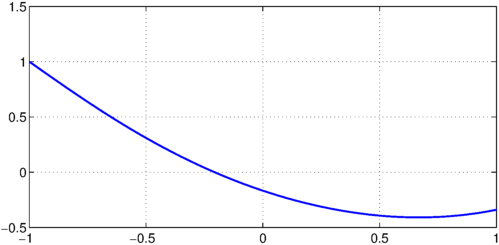
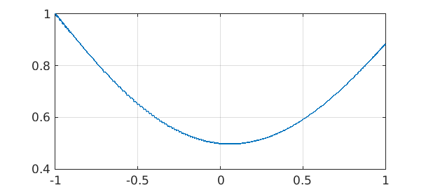
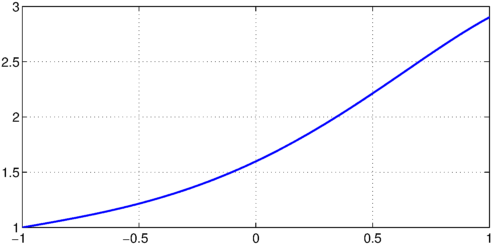

LW = 'linewidth';
With the advances of automatic differentiation of scalars in Chebfun it became possible to solve ODEs in Chebfun with more exotic constraints than simply conditions at the endpoints of the domain. These include interior point conditions, as well as conditions on the function over the whole domain.
This example describes how to solve problems of this kind. All the ODEs here are linear, but the approach extends to nonlinear problems too.
Example 1: Mean zero solution
In this example, we solve the ODE
$$ u'' + x^2 u = 1 $$
on the domain $[-1,1]$ subject to the conditions
$$ u(-1) = 1; \quad \mbox{The average of $u$ over $[-1,1]$ is $0$} $$
An equivalent way to state the second condition is that the definite integral of the solution over the domain must be zero.
As usual, we start by creating a chebop:
N = chebop(@(x,u) diff(u,2)+x.^2.*u);
Since the first condition is applied on the left endpoint of the domain, we use the .lbc field of the chebop:
N.lbc = 1;
However, the second condition applies on the function over the whole domain. We use the field .bc to enforce the condition
N.bc = @(x,u) sum(u);
Note that here N.bc is an anonymous function. Chebfun interprets this to be a condition that applies on the solution over the interior of the domain (compared to, e.g., N.bc = 1 or N.bc = 'dirichlet', which automatically get transformed into conditions on both boundaries). Further, note that the anonymous function can take x, the independent variable on the domain as an argument, allowing you to introduce weighting functions in problems.
We now solve the problem in the regular way using backslash and plot the solution:
u = N\1; plot(u,LW,1.6), grid on

We confirm that we've solved the problem by calculating the residual of the differential equation and both the conditions:
disp(['Residual of differential equation: ', num2str(norm(N(u)-1))]) disp(['Residual of left BC: ', num2str(abs(u(-1)-1))]) disp(['Residual of interior condition: ', num2str(abs(sum(u)))])
Residual of differential equation: 3.9683e-12 Residual of left BC: 2.2204e-16 Residual of interior condition: 2.0521e-17
We could also require the mean of $u$ to take another value, e.g. $1$, via
N.bc = @(x,u) mean(u)-1;
If we now solve the problem, we see that this condition is satisfied to a high accuracy
u = N\1; disp(['Residual of Interior condition: ', num2str(abs(mean(u)-1))])
Residual of Interior condition: 3.3307e-16
Finally, we could also introduce some weighting, for example, we could look for a solution which is orthogonal to $\sin(4\pi x)$:
N.bc = @(x,u) sum(sin(4*pi*x).*u); u = N\1; plot(u,LW,1.6), grid on

Again, we obtained an accurate solution (to evaluate the interior point condition, we need to create a chebfun for $x$):
disp(['Residual of differential equation: ', num2str(norm(N(u)-1))])
disp(['Residual of left BC: ', num2str(abs(u(-1)-1))])
x = chebfun('x');
disp(['Residual of interior condition: ', num2str(abs(sum(sin(4*pi*x).*u)))])
Residual of differential equation: 7.0223e-13 Residual of left BC: 4.4409e-16 Residual of interior condition: 0
Example 2: Interior point conditions
We now wish to solve the same ODE as above:
$$ u'' + x^2 u = 1 $$
on the domain $[-1,1]$, but in addition to a left boundary condition
$$ u(-1) = 1 $$
we now have the interior point condition
$$ u(0) = 0.5. $$
We reuse the chebop from above, only needing to change the .bc field:
N.bc = @(x,u) u(0)-.5;
We solve the problem and confirm that we obtain an accurate solution
u = N\1; plot(u,LW,1.6), grid on disp(['Residual of differential equation: ', num2str(norm(N(u)-1))]) disp(['Residual of left BC: ', num2str(abs(u(-1)-1))]) disp(['Residual of interior condition: ', num2str(abs(u(0)-.5))])
Residual of differential equation: 2.0369e-12 Residual of left BC: 1.1102e-16 Residual of interior condition: 2.2204e-16

If we want to impose conditions on the derivative, such as
$$ u'(0) = 1, $$
we need to use a little trick in order to be able to evaluate the derivative at an interior point. MATLAB doesn't allow the stacked parentheses we would need for something like @(x,u) diff(u)(0), so instead this is achived using the feval method:
N.bc = @(x,u) feval(diff(u),0)-1;
We solve the problem
u = N\1; plot(u,LW,1.6), grid on

and confirm that we obtain an accurate solution
disp(['Residual of differential equation: ', num2str(norm(N(u)-1))]) disp(['Residual of left BC: ', num2str(abs(u(-1)-1))]) up = diff(u); disp(['Residual of interior condition: ', num2str(abs(up(0)-1))])
Residual of differential equation: 3.6648e-12 Residual of left BC: 5.5511e-16 Residual of interior condition: 1.2879e-14